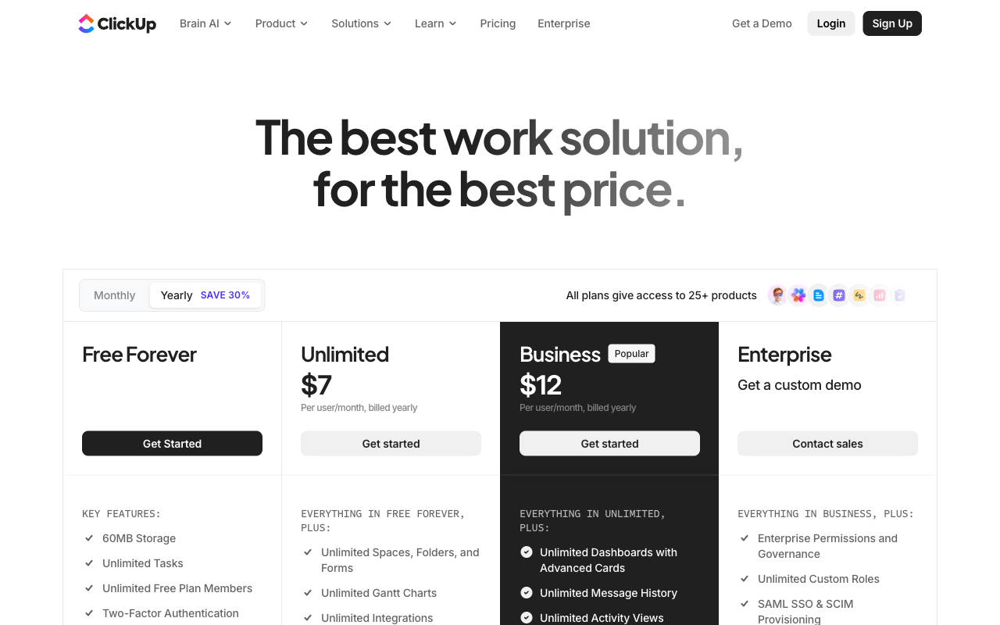

Intro · the landscape
Four kinds of research
Before you sell anything, you research. There are four angles — and they answer four different questions.
Market research
The whole category — its size, its trends, where demand is heading.
Audience research
Who you sell to — their pains, their language, what they actually want.
Content research
What to say — the topics, angles and formats that actually land.
This class
Competitor research
Who you're up against — their ads, pages, keywords and every move they make.
Intro · what's knowable
What can we learn about a competitor?
Two tiers: the strategic levers behind their marketing — and the tactics where those levers show up. We'll take them one by one.
Strategic leversthe decisions behind it all
01
Positioning
The space they claim — who they say they're for.
02
Messaging
The words, promises and angles they lead with.
03
Pricing
Their plans, tiers and how they package value.
Tacticswhere those decisions show up
04
SEO
The keywords and pages they rank for on Google.
05
Ads
The paid creatives they're running right now.
06
Social Media
What they post — and how their audience reacts.
01 · Strategic levers
Positioning
The category a competitor claims — and whether they actually defend it. Read live with Claude, using Buffer as our worked example.
01 · Positioning · the page we analyze
Start with the real page
The homepage is where positioning lives — the hero line is the category claim.
buffer.com

01 · Positioning · the process
Page → read → the items
Same method as always: point Claude at the URL, it reads the live page and fills the same set of items — grounded in Porter's copy banks.
1 · the page
The live homepage
3 · the items
01 Category claim
02 Competes against
03 Audience
04 Awareness path
05 Goal
06 Value read
The same items, every page
01 · Positioning · the analysis
Buffer, through the framework
The items — filled with what's actually on the page, classified with Porter's copy banks.
read off the pagethe value read · does it work?
01
Category claim
the space it owns
"social media workspace"load-bearing word · workspacenot "a scheduler"
02
Competes against
the alternative it names
single-function schedulersmanual postingno named rival on page
03
Audience
one, or layered?
one persona · creator / operatortabs Creators / SMB / Agencies = surface
04
Awareness path
where it starts
Solution → Product → Most-awareskips Unaware + Problem-awarezero problem-education
free email signupproduct-led · no sales motion"Get started for free" ×2
06
Value read verdict
the 6-layer verdict
Clarity ✓Relevance ✓Value ~★ Differentiation ✗ weakCompleteness ~Conversion ✓
Buffer converts beautifully — but never says why Buffer over Hootsuite. It claims a category; it never defends it.
02 · Strategic levers
Messaging
The 2–3 claims a competitor repeats across the page — and whether they back them. Same Buffer teardown, read for the words.
02 · Messaging · the words on the page
Three claims, repeated everywhere
Messaging is what they say again and again. Buffer leans on three — pulled verbatim off the page.
Completeness
“The most complete set of publishing integrations, ever.”
“Connected to every platform and tool you use.”
Universality
“For everyone.”
“Whoever you are, we've got you covered.”
Transparency · humanity
“We are an open company.”
“No bots, just real people who care.”
02 · Messaging · the process
Page → read → the items
Same method: Claude reads the live copy and names each move with Porter's banks — the figures, the triggers, the angle.
1 · the page
The live copy
3 · the items
01 The claims
02 Concept & hook
03 Angle
04 Rhetorical figures
05 Triggers
06 Value read
The same items, every page
02 · Messaging · the analysis
Buffer, through the framework
Each move named with a real bank entry — the figure, the trigger, the angle. Never an invented label.
read off the pagethe value read · does it hold up?
completeness · "complete… ever"universality · "for everyone"transparency · "no bots"
02
Concept & hook
the one big idea
concept · "run all your social from one place"hook · identity · "your social media workspace"
before/after · zero → one → one millionover a feature listicleaspirational, not pain-relief
04
Rhetorical figures
named from the bank
GradatioTricolonCorrectio · "not just X" (gastado)Hipérbole · "10x"
05
Triggers
the levers leaned on
social proof (dominant)authority · transparencyreciprocitycommitmentunity
06
Value read holds up?
claim vs proof
★ evidence-per-claim ✗present-tense ✗ ("will help")one-term-one-thing ✓
Bold and human — but "most complete… ever" and "10x" carry no proof. Confidence without evidence.
03 · Strategic levers
Pricing
What a competitor's pricing page reveals — read live with Claude, using ClickUp as our worked example.
03 · Pricing · the page we analyze
Start with the real page
No rebuild, no guessing — Claude reads exactly what's live at their pricing URL.
clickup.com/pricing

03 · Pricing · the process
Page → read → the items
Point Claude at the URL. It reads the live page, then fills the same set of items every time — so the read is objective.
1 · the page
The live pricing page
3 · the items
01 Packages
02 Price
03 Monetization
04 User types
05 Policies
06 Framing
The same items, every page
03 · Pricing · the analysis
ClickUp, through the framework
The same six items — filled with what's actually on the page. Captured live, 2026-08-06.
Lenses 1–5 · factsLens 6 · the read
01
Packages
how many, and what
4 tiersFree → Unlimited → Business → Enterprisefree ✓contact-sales ✓Business = "Popular"
$0 / $7 / $12 / Salesannual −30% vs monthlymonthly $0 / $10 / $19 / Sales
03
Monetization crux
what they charge for
★ per seat + AI add-on + usage creditsstaircase · automations 100→1K→5K→250Kadd-ons · Brain $9 / Everything $28usage · $0.001/credit
04
User types
who each tier is for
individual → small → mid → enterpriseself-serve → sales at Enterprisebottom-up → top-down
05
Policies & friction
the fine print
30-day money-backper-Workspace billingEnterprise = contact salesHIPAA · data residencysavings calc vs 25 tools · FAQ
06
Framing the read
anchors & interpretation
★ value anchor · vs your whole 25-tool stack → save $282K/yrprice anchor · annual-first"$100 / $750 in value"decoy · Business steered
04 · Tactics
SEO
What a competitor publishes — and whether any of it actually ranks. Read live from sitemaps + real rankings, using ClickUp as our worked example.
04 · SEO · the page we analyze
Read the sitemap honestly
A sitemap is the competitor's whole map — but it lies about dates. Profile it with curl + python before you trust a single number.
✻ profile clickup.com/sitemap.xml → 27 sub-sitemaps
6,088 urls6,088 datedtop-day 4%[datable] blog
1,526 urls1,526 datedtop-day 100%[REBUILD] sitemap-next ← 1 deploy, not 1,526 edits
1,437 urls1,437 datedtop-day 100%[REBUILD] programmatic
35,132 urls0 datedtop-day 0%[NO DATE] blog-programmatic
6,010 urls0 datedtop-day 0%[NO DATE] blog-es · +19 more locales…
27 sitemaps · 160,420 urls · 2 REBUILD · 24 NO-DATE · 1 datable
The honest signal isn't 160K, or 1,526 — it's the one datable sitemap: the blog.
04 · SEO · the process
Sitemap → read → the items
Claude reads the sitemaps + Wayback, dates them honestly, classifies each page, then joins to real rankings — publishing vs actually winning.
1 · the site
clickup.com/sitemap.xml
<loc>/blog/claude-alternatives
<loc>/blog/claude-vs-chatgpt
<lastmod> 2026-…
27 sub-sitemaps · 160K urls
Sitemaps + Wayback
2 · read
Claude + Porter read it
3 · the items
01 Footprint
02 Datable vs rebuild
03 Classification
04 The content bet
05 Publish vs rank
06 The read
The same items, every site
04 · SEO · the analysis
ClickUp, through the framework
Sitemaps profiled live today; rankings from a live SERP check (US). Publishing ≠ ranking — the join is where the truth is.
measured livethe join · publish vs rank
160,420 URLs27 sub-sitemaps~15 locales
02
The date trap
the sitemap lies
24 / 27 sin lastmodsitemap-next 1,526 = 1 deploy, not editsonly the blog is datable
03
What they build
page types
programmatic blog + templatesTOFU/MOFU at scalehow-to · vs-X · alternatives
04
The content bet
where they doubled down
41 en-US "claude" posts796 across localesclaude-vs-* · how-to-use-claude · alternatives
05
Publish ≠ rank the join
do they actually win?
"claude alternatives" → #57"claude ai review" → #44"vs chatgpt" · "how to use" → not in top 100
motion = volume, not rankinga content firehose that mostly misses page 1
A firehose — 41 "claude" posts — but most never crack page 1. The sitemap looks busy; the rankings say otherwise.
06 · Tactics
Social Media
What a competitor posts — and how their audience reacts. Read live from public Instagram data via Porter, using adidas as our worked example.
06 · Social · the account we analyze
Start with the public profile
No login, no scraping tricks — just a public business account, read through Porter's Instagram public data.
@adidas
✓
Where there's a pitch, there's a legend. #YouGotThis
linktr.ee/adidas
Rebuilt from the real public figures Porter returns — captured Aug 2026.
06 · Social · the process
Handle → read → the items
Give Claude a handle. Porter pulls the public data (Business Discovery), and the same items get filled — then it ships as a hosted dashboard.
1 · the handle
instagram.com/adidas
29.6M
1,637
carousel
reel
The public account
2 · read
Claude + Porter read it
3 · the items
01 Profile
02 Format mix
03 Engagement
04 Publishing cadence
05 Creators & collabs
06 What's visible
→ a hosted Porter dashboard
06 · Social · the analysis
adidas, through the framework
Every number measured off public data — 100 posts (50 carry likes), Sep 2025–Jul 2026. The full teardown ships as a hosted Porter dashboard.
measured from public datathe honest boundary
29.6M followers1,637 postsfollows 1,060bio · #YouGotThis
Carousel 68%Reel 25%Image 7%→ carousel-first
03
Engagement
likes + comments only
median 79.8K likes/postmean 320K — 1 post hit 4.3Mconversation 0.55%
04
Publishing
cadence & timing
~100 posts · Sep'25–Jul'26clock in UTCheatmap · weekday × hour
05
Creators & collabs
who fuels the feed
44% of posts tag a creatortop · tatemcrae 531K · jadepicon 508K#YouGotThis on 50%
06
What's visible boundary
public ≠ owned
✓ followers · likes · comments · formats · cadence✗ reach · saves · impressions · demographics
Carousel-first and creator-fueled — athletes + musicians, not product shots. But public data stops at likes: no reach, no audience.